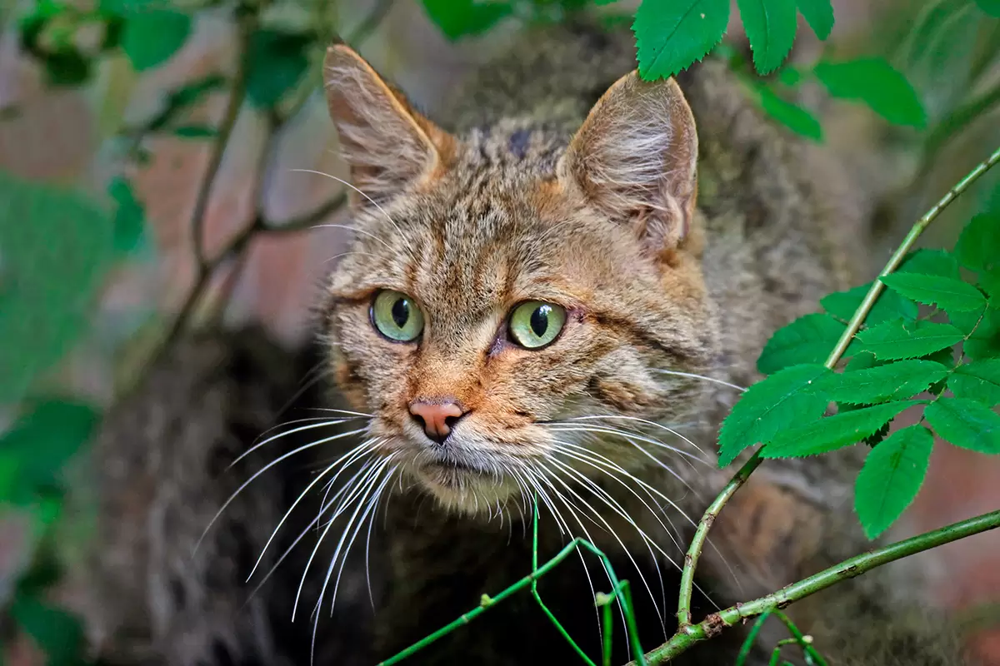

|
El gato montés presenta un pelaje denso y corto que varía del grisáceo al café rojizo, con manchas oscuras en forma de tostones. Su vientre y partes inferiores son de color más claro. Una característica distintiva es su corta cola, de aproximadamente 15 cm de largo, con bandas oscuras y punta negra. Además, posee orejas puntiagudas con mechones de pelo en la parte superior.
menu principal
|

 GATO MONTES
GATO MONTES